- 사진은 숫자 격자:
shape = (H, W, C),uint8(0~255), OpenCV 색 순서는 BGR. 크기를 줄 때만 (W, H). Gray → Blur → Threshold → Morphology(또는Canny)를 지나며 숫자의 뜻이 밝기 → 경계 → 물체 → 모양으로 바뀐다. 인자는 목적에 맞게 고르고 기록한다.- 영상은 같은 처리를 Frame마다 반복하고, 증강은 라벨 뜻이 안 바뀌는 변형을 train에만 쓰며, 결과는 원본과 다시 비교해 검증한다.
본문에는 핵심 코드 한두 줄만 남겼어요.
📦 필요한 패키지
| 패키지 (pip 이름) | 뭐 하는 애? | 코드에서 |
|---|---|---|
opencv-python | 이미지·영상 읽기/쓰기, 색 변환, 필터, 이진화, 형태학, 회전 | import cv2 |
numpy | OpenCV 이미지의 실제 정체 (숫자 배열), 자르기·계산 | import numpy as np |
matplotlib | 원본·결과를 나란히 그려서 비교 | import matplotlib.pyplot as plt |
🔧 설치 · 확인
python --version
python -m pip install opencv-python numpy matplotlib
python -m pip show opencv-python numpy matplotlib
python -c "import cv2; print(cv2.__version__)" # 4.x 가 나오면 OKopencv-python → import cv2. 강의는 OpenCV 4.x 공식 문서를 최종 기준으로 확인하라고 안내해요.data/)는 건드리지 않고 결과는 outputs/에 따로 저장해요. 원본을 덮어쓰면 나중에 비교·재현·복구를 할 수 없기 때문이에요.이거 어디에 써?
카메라가 남기는 건 숫자 격자뿐이에요. 컴퓨터는 "흠집"이 뭔지 몰라요. 전처리는 촬영 조건이 제각각인 사진·영상을 다음 단계(규칙 판단이나 모델)가 쓸 수 있는 입력으로 맞춰 주는 일이에요.
imread · shape→ 밝기로
cvtColor→ 크기 맞추기
resize→ 잡음 줄이기
GaussianBlur→ 경계·영역
Canny / threshold→ 저장·재확인
imwrite · imread
| 출력 한 칸을 정할 때 보는 곳 | 예 |
|---|---|
| 자기 칸만 | Gray 변환, Threshold |
| 주변 칸까지 | Blur, Canny, Morphology |
| 다른 자리에서 | Resize, 회전(warpAffine) |
① 이미지 = 숫자 배열
영상에서 한 장을 꺼내면 이미지(Frame), 이미지는 위치별 숫자의 배열이에요. 컬러 사진은 칸(Pixel) 하나에 숫자 3개(B, G, R), 각 0~255. Gray는 [H, W], 컬러는 [H, W, C].
| 항목 | 뜻 | 예 | 확인 코드 |
|---|---|---|---|
shape | (세로 H, 가로 W, 채널 C) | (240, 320, 3) | img.shape |
dtype | 숫자의 자료형 | uint8 | img.dtype |
| min / max | 값 범위 | 0 / 255 | img.min(), img.max() |
ndim | 차원 수 (Gray는 2, 컬러는 3) | 3 | img.ndim |
한 칸 값은 img[y, x]로 봐요 — 세로(y)가 먼저. 예: [20, 80, 200]은 B=20, G=80, R=200 → 빨강 쪽 색. shape가 (345, 450, 3)이면 450은 Width(열의 수)예요.
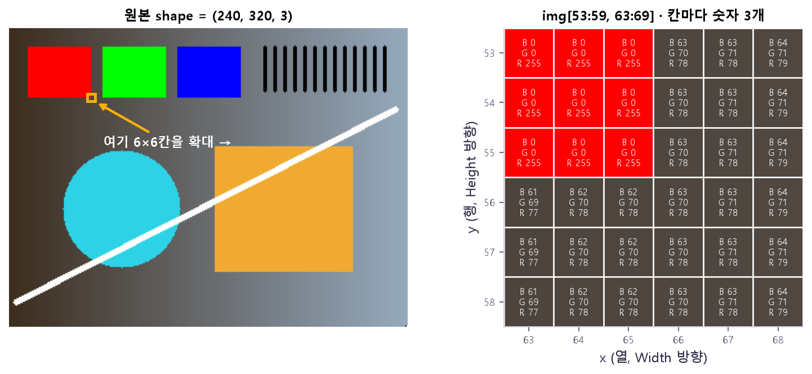
B 0 · G 0 · R 255, 배경 칸은 세 값이 비슷한 회색(약 63·70·78). 세로 눈금이 y(행), 가로 눈금이 x(열)이에요. 🤔 왜? 사진은 처음부터 "빨강"이라는 뜻이 아니라 이 숫자 격자로 저장되기 때문이에요. 그래서 shape = (240, 320, 3)은 "240줄 × 320칸 × 숫자 3개"이고, 한 칸을 꺼낼 땐 줄 번호(y)부터 img[y, x]로 써요.uint8은 0~255만 담을 수 있는 자료형이라 더하기·빼기를 함부로 하면 값이 넘쳐요(⑥ 밝기 조절에서 다시 나와요). 그래서 읽자마자 shape · dtype · min/max를 찍어 봐요.(H, W), img[y, x]가 돼요. 참고로 Day11 PyTorch Conv2d는 [N, C, H, W](채널이 앞)라서, 모델에 넣을 땐 축 순서를 또 바꿔야 해요.(240, 320, 3) — BGR을 제대로 표시무엇을 보나: 위쪽 색 칸이 왼쪽부터 빨강·초록·파랑, 배경은 왼쪽이 어둡고 오른쪽이 밝아요. 아래 장의 모든 변환이 이 사진에서 출발해요. 🤔 왜 이런 그림? 색(BGR 순서)·밝기 변화(그림자)·가는 줄무늬(확대/축소)·직선(경계)을 한 장에서 다 확인하려고요.
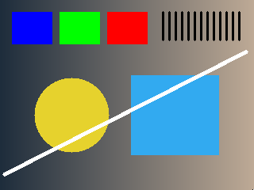
무엇을 보나: 왼쪽 칸이 빨강 → 파랑, 오른쪽 칸이 파랑 → 빨강으로 바뀌었어요. 초록은 그대로예요. 🤔 왜? 숫자는 하나도 안 바뀌었고 읽는 순서만 바뀌었어요. 첫 번째 칸(OpenCV에선 B)을 Matplotlib은 R로 읽으니까 파랑과 빨강만 자리를 바꾸고, 가운데 G는 둘 다 같은 자리라 그대로예요.
imread)는 B, G, R, Matplotlib(imshow)는 R, G, B. Matplotlib로 볼 땐 cv2.cvtColor(img, cv2.COLOR_BGR2RGB) 후 표시, RGB 배열을 imwrite로 저장할 땐 다시 BGR로 되돌려요.img = cv2.imread("data/scene.png", cv2.IMREAD_COLOR) # 실패해도 에러 없이 None
cv2.imwrite("outputs/copy.png", img) # 성공 여부를 True/False로cv2.imshow("result", img) # 운영체제 창에 표시
cv2.waitKey(0) # 0 = 키를 누를 때까지 무기한 대기b, g, r = cv2.split(img) # 각각 [H, W]
merged = cv2.merge([b, g, r]) # 원래대로 [H, W, 3]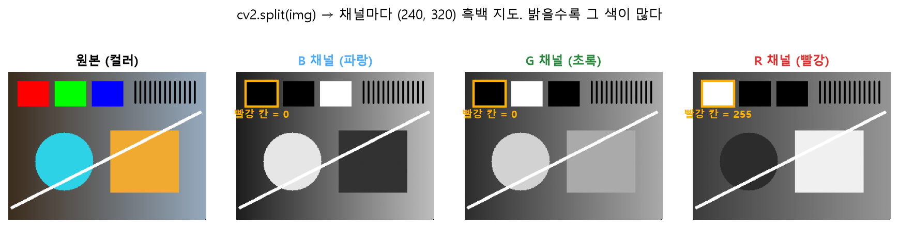
split한 채널 하나하나는 흑백 사진((240, 320))이에요. 노란 네모의 빨간 사각형은 R 채널에서만 흰색(255), B·G에서는 검정(0). 하늘색 원은 B·G에서 밝고 R에서 어두워요. 🤔 왜? 각 채널은 "그 색이 얼마나 섞였나"만 담은 밝기 지도이기 때문이에요. 하늘색 = 파랑 + 초록이라 B·G가 밝고, 주황 = 빨강 + 약간의 초록이라 R이 가장 밝아요. 채널 순서를 바꾸면(BGR↔RGB) 이 지도가 다른 색 자리에 들어가서 위의 "빨강↔파랑 뒤바뀜"이 생겨요.② 색공간 · 크기 맞추기
색공간은 "정답"이 아니라 목적에 따라 고르는 표현이에요.
| 목적 | 표현 | 변환 코드 | 결과 shape |
|---|---|---|---|
| Matplotlib에 색 표시 | RGB | COLOR_BGR2RGB | (H, W, 3) |
| 밝기·경계 분석 (Threshold, Edge) | Gray | COLOR_BGR2GRAY | (H, W) |
| 특정 색 범위 고르기 | HSV (uint8: H 0~179, S·V 0~255) | COLOR_BGR2HSV | (H, W, 3) |
| Gray 결과를 컬러 영상에 저장·그리기 | BGR | COLOR_GRAY2BGR | (H, W, 3) |
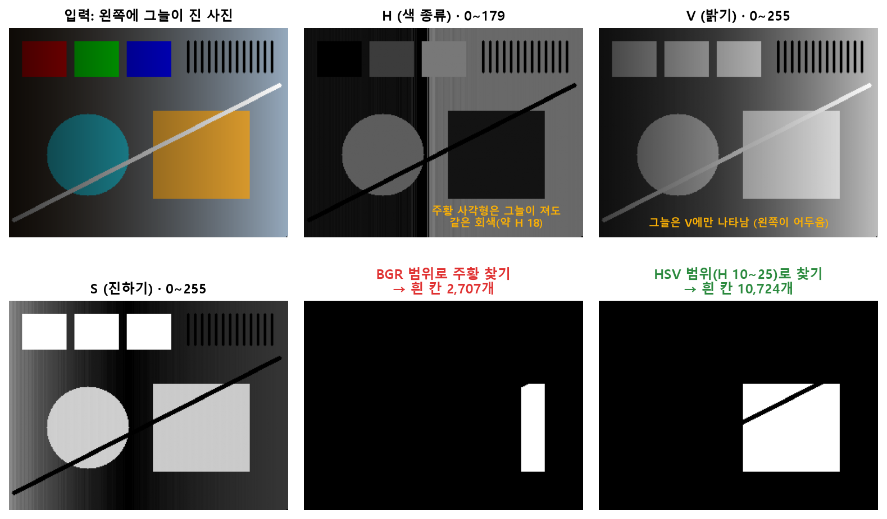
GRAY2BGR은 같은 밝기 값을 3채널로 복제할 뿐, 원래 색을 되살리지 못해요. 🤔 왜? — Gray로 바꿀 때 색 3개를 섞어 하나로 만들면서 "어떤 색이었는지" 정보가 버려졌기 때문이에요. 그래도 쓰는 이유는 컬러 VideoWriter나 컬러 도형 그리기가 3채널을 요구하기 때문이에요.cv2.cvtColor() 명령어 사전에서 자세히 →gray = cv2.cvtColor(img, cv2.COLOR_BGR2GRAY) # (240, 320)
rgb = cv2.cvtColor(img, cv2.COLOR_BGR2RGB) # (240, 320, 3)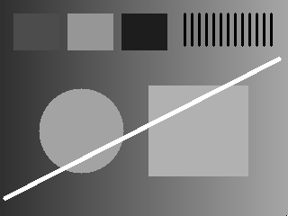
COLOR_BGR2GRAY → (240, 320)무엇을 보나: 색이 사라지고 밝기만 남았어요. 빨강·초록·파랑 칸이 서로 다른 회색이 됐고(초록이 가장 밝아요), 배경의 왼쪽→오른쪽 밝기 변화는 그대로예요. shape에서 채널 축 3이 없어졌어요. 🤔 왜 색마다 회색이 달라? 단순 평균이 아니라
0.299R + 0.587G + 0.114B로 섞어서예요. 사람 눈이 초록에 가장 민감해서 초록에 가장 큰 무게를 줘요. 경계·이진화·OCR은 색보다 밝기 차이가 중요해서 Gray로 바꾸고 시작해요.크기 바꾸기와 보간법
줄일 땐 여러 픽셀을 하나로 요약하고, 키울 땐 없던 픽셀 값을 주변에서 추정해요. 이 추정 방법이 보간법.
INTER_NEAREST무엇을 보나: 원·선의 가장자리가 계단처럼 각지고, 오른쪽 위 줄무늬가 뭉텅이로 보여요. 🤔 왜? 새로 생긴 픽셀에 가장 가까운 원래 픽셀 값을 그대로 복사해서예요. 한 픽셀이 여러 칸으로 똑같이 늘어나니 네모난 덩어리가 보여요. 대신 값을 섞지 않아서 마스크(0/1 라벨)를 키울 때 써요.
INTER_LINEAR무엇을 보나: 왼쪽과 같은 크기로 키웠는데 가장자리가 부드럽게 번진 모습이에요. 🤔 왜? 새 픽셀 값을 주변 4개 픽셀의 거리 가중 평균으로 계산해서, 경계에 중간 밝기가 생겨요. 사진은 자연스러워지지만, 마스크에 쓰면 0과 1 사이 "애매한 값"이 생겨 라벨이 깨져요.
| 보간법 | 언제 | 🤔 왜? |
|---|---|---|
INTER_AREA | 축소에 자주 사용 | 줄어드는 칸이 덮는 면적의 평균을 내서, 몇 칸을 건너뛰며 고르는 방식보다 잔무늬·깨짐이 적음 |
INTER_LINEAR | 기본값, 확대에도 사용 | 가까운 4칸을 거리에 따라 섞어 값이 부드럽게 이어짐 |
INTER_NEAREST | 0/255 Mask에 적합 | 가장 가까운 값을 그대로 복사해서 중간값(예: 128)이 안 생김 → Mask 뜻이 유지됨. 대신 계단 현상 |
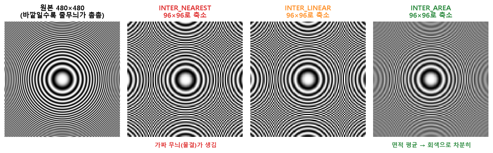
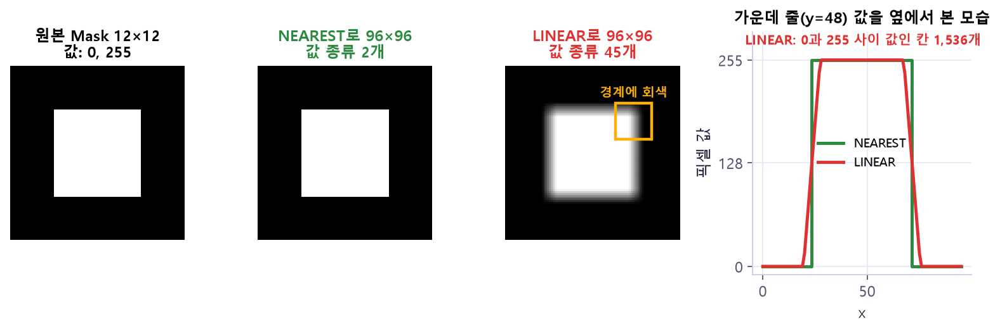
cv2.resize() 명령어 사전에서 자세히 →small = cv2.resize(img, dsize=(224, 224), interpolation=cv2.INTER_AREA)
half = cv2.resize(img, dsize=None, fx=0.5, fy=0.5, interpolation=cv2.INTER_AREA)③ Filter · Edge — 주변 칸까지 보고 계산
칸 하나만 봐서는 그게 잡음인지 알 수 없어요. 필터는 Kernel(작은 창)을 옮기며 주변 값을 섞어 새 값을 만들어요. 같은 위치끼리 곱한 뒤 모두 더해요.
입력 3×3 이웃 평균 Kernel
10 10 10 1/9 1/9 1/9
10 100 10 × 1/9 1/9 1/9 → 출력 = (10×8 + 100) ÷ 9 = 20
10 10 10 1/9 1/9 1/9 (튀는 점 100이 20으로 누그러짐)| Kernel 설정 | 효과 | 🤔 왜? |
|---|---|---|
| 작은 Kernel | 세부 보존, 효과 약함 | 섞는 이웃이 적으니 원래 값이 많이 남음 |
| 큰 Kernel | 더 강한 Blur, 세부 손실·연산 증가 | 먼 칸까지 섞어서 작은 무늬가 평균에 묻히고, 곱셈 횟수도 늘어남 |
| 합이 1인 평균 Kernel | 밝기 평균화 (Blur) | 가중치 합이 1이라 전체 밝기는 그대로 유지 |
| 음수 가중치 포함 | 경계·선명도 강조 (Sharpen) | 주변을 빼서 "나와 이웃의 차이"가 커지는 곳이 강조됨 |
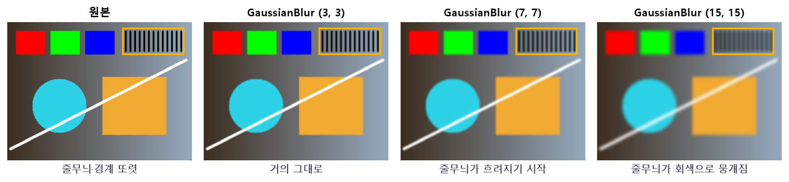
| 필터 | 방식 | 장점 | 주의 |
|---|---|---|---|
GaussianBlur | 가운데에 더 큰 가중치를 준 평균 | 자연스러운 Blur | Edge도 흐려짐 |
medianBlur | 이웃 값 중 중앙값 선택 | 점 잡음(소금·후추)에 강함 | ksize는 1보다 큰 홀수 |
bilateralFilter | 거리 + 밝기 차이까지 고려 | Edge 보존 | 비교적 느림 |
| 10 | 10 | 10 |
| 10 | 100 | 10 |
| 10 | 10 | 10 |
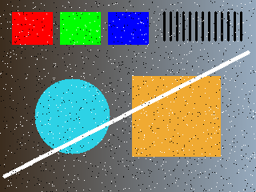
무엇을 보나: 원본 위에 흰 점·검은 점이 무작위로 흩뿌려졌어요(소금·후추 잡음). 🤔 왜 이런 잡음? 센서 불량·전송 오류처럼 픽셀 몇 개가 극단값(0 또는 255)으로 튀는 상황을 흉내 낸 거예요. 오른쪽 두 필터의 차이가 이 잡음에서 확 드러나요.
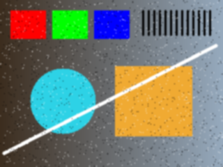
GaussianBlur((5,5), 0)무엇을 보나: 점들이 흐릿한 얼룩으로 번졌지만 여전히 남아 있고, 도형 가장자리도 같이 흐려졌어요. 🤔 왜? 5×5 주변을 평균 내는 방식이라, 255짜리 흰 점 하나가 주변 값을 끌어올려 얼룩으로 퍼져요. 극단값을 "버리지" 못하고 "섞기"만 해요.
medianBlur(5)무엇을 보나: 점 잡음이 거의 사라졌고, 도형 가장자리도 비교적 또렷해요. 🤔 왜? 5×5 주변 25개 값을 줄 세워 가운데 값을 고르는 방식이라, 튀는 값 몇 개는 줄 끝으로 밀려나 아예 뽑히지 않아요. 그래서 소금·후추 잡음엔 Median이 강해요.
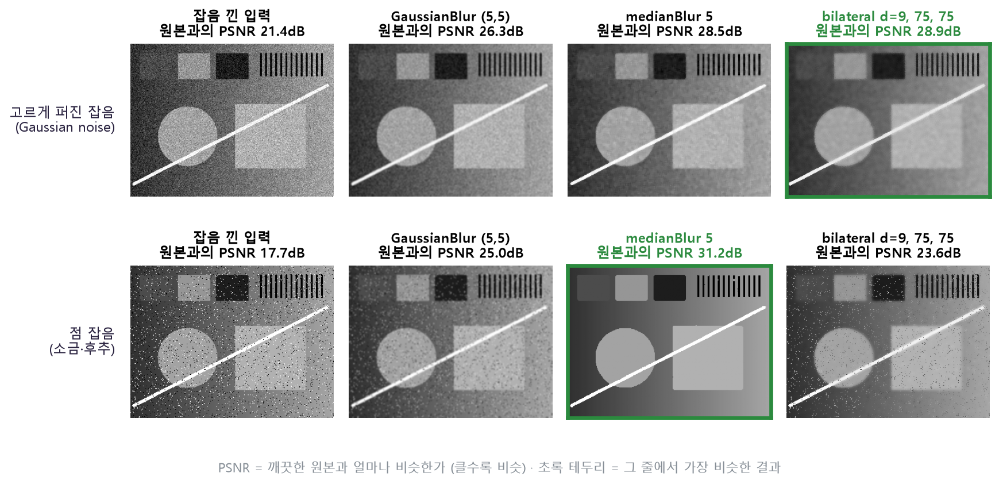
BORDER_REFLECT(경계값을 거울처럼 반사), BORDER_REPLICATE(가장자리 픽셀 반복) 등 규칙에 따라 가장자리 결과가 달라져요. 🤔 왜 규칙이 필요? — 바깥 칸 값을 "뭔가로" 정해야 곱하고 더할 수 있으니까요. 0(검정)으로 채우면 가장자리가 어둡게 번질 수 있어요.gaussian = cv2.GaussianBlur(gray, ksize=(5, 5), sigmaX=0)
median = cv2.medianBlur(gray, ksize=5)Canny Edge — "여기가 경계인가?"
밝기가 갑자기 바뀌는 곳만 흰색(255)으로 남겨요. 강한 경계(threshold2 이상)는 확실히 남기고, 약한 경계(threshold1~threshold2)는 강한 경계에 연결된 것만 남기는 방식이에요.
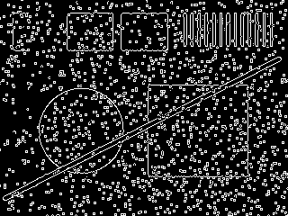
Canny(70, 150) · 경계 픽셀 12,138개무엇을 보나: 도형 윤곽 말고도 잡음 점마다 작은 동그라미가 그려져 화면이 지저분해요. 🤔 왜? 잡음 점 하나도 "주변보다 밝기가 확 다른 곳"이라 Canny 기준을 넘어요. Canny는 그게 잡음인지 진짜 테두리인지 구분하지 못해요.
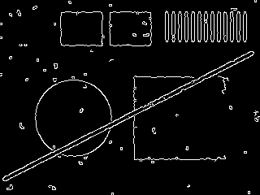
무엇을 보나: 기준값은 왼쪽과 똑같은데 경계가 약 1/3로 줄고, 도형 윤곽 위주로 남았어요(작은 점 몇 개는 아직 있어요). 🤔 왜? Blur가 잡음 점의 밝기 튐을 주변과 섞어 작게 만들어서, 기준(70/150)을 못 넘게 됐어요. 도형 경계는 원래 차이가 커서 흐려져도 살아남아요.
cv2.Canny() 명령어 사전에서 자세히 →blur = cv2.GaussianBlur(gray, (5, 5), 0) # 잡음 Edge를 줄이려고 먼저 Blur
edges = cv2.Canny(blur, threshold1=70, threshold2=150)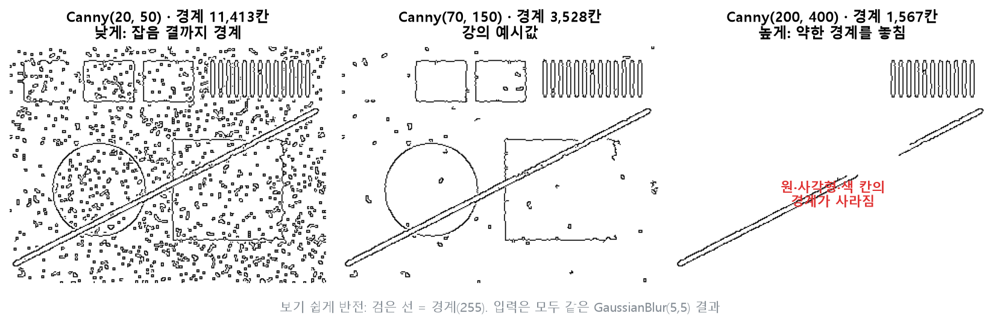
④ Threshold · 형태학 — "여기가 물체인가?"
Threshold는 기준값 T로 칸마다 0(배경) / 255(물체)를 정해요. 입력은 보통 Gray 1채널이고, 결과 Binary는 뒤의 형태학 처리에 쓰기 좋아요. 아래 슬라이더로 T를 바꿔 보세요.
무엇을 보나: 위 Gray 이미지 그대로예요. 슬라이더를 움직여 오른쪽 결과와 비교해 보세요.
THRESH_BINARY)무엇을 보나: 밝기가 T보다 크면 흰색(255), 아니면 검정(0). 🤔 왜 한 번에 깔끔히 안 갈려? 배경이 왼쪽 어둡고 오른쪽 밝아서, 어떤 T를 골라도 배경 일부가 물체와 같은 쪽으로 넘어가요. 아래 Otsu·Adaptive가 필요한 이유예요.
THRESH_BINARY, T = 128
Gray 값 : 40 110 160 220
결과 : 0 0 255 255| 방법 | 기준값 정하는 법 | 장점 | 주의 |
|---|---|---|---|
| Fixed | 사람이 값 하나 지정 | 단순·빠름 | 조명 변화에 취약 |
| Otsu | 밝기 히스토그램으로 자동 결정 | 물체·배경 밝기가 두 무리로 갈릴 때 유용 | Blur가 도움될 수 있음 |
| Adaptive | 지역마다 따로 계산 | 조명이 고르지 않아도 대응 | blockSize·C 조정 필요 |
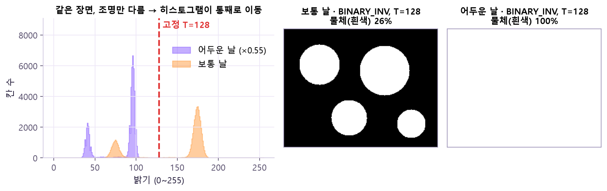
blockSize×blockSize 영역의 평균(또는 가우시안 평균)에서 C를 뺀 값을 그 칸만의 기준으로 써요.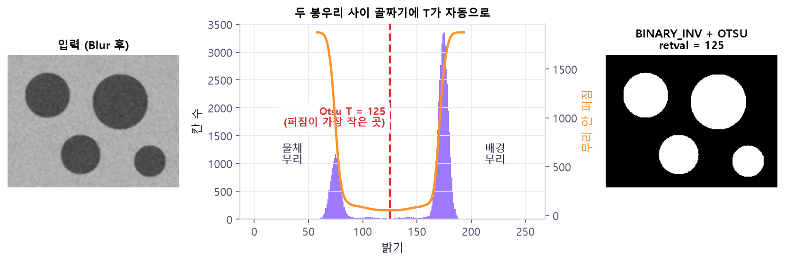
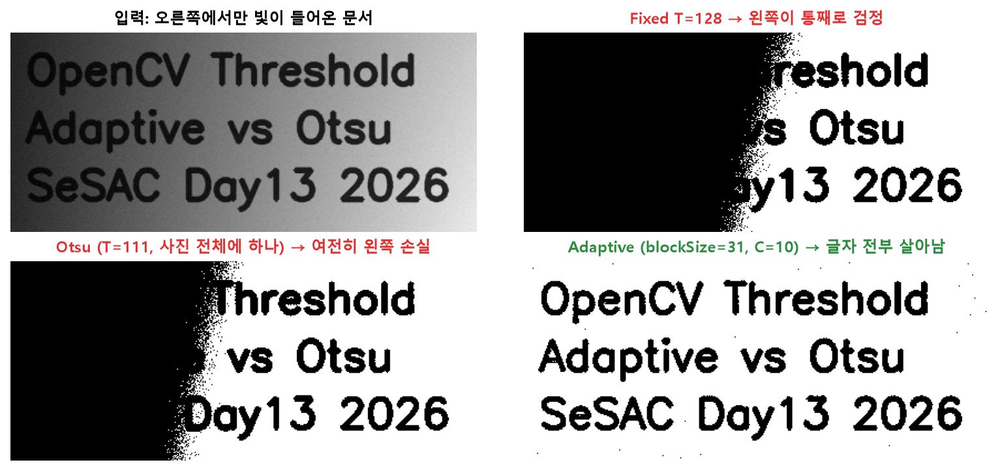
retval, binary = cv2.threshold(gray, thresh=140, maxval=255, type=cv2.THRESH_BINARY)
adaptive = cv2.adaptiveThreshold(gray, 255, cv2.ADAPTIVE_THRESH_GAUSSIAN_C, ...)형태학(Morphology) — 물체 모양 다듬기
이진화 후엔 흰 먼지·작은 검은 구멍이 남아요. Kernel로 흰 영역(전경)을 깎거나 부풀려서 정리해요. Erosion(침식)은 Kernel 안이 모두 흰색일 때만 흰색을 남기고, Dilation(팽창)은 Kernel 안에 하나라도 흰색이 있으면 흰색으로 만들어요.
| 연산 | 순서 | 효과 | 예 |
|---|---|---|---|
| Erosion (침식) | 1회 | 흰 영역 축소 | 붙은 물체 분리 |
| Dilation (팽창) | 1회 | 흰 영역 확대 | 끊긴 부분 연결 |
| Opening | 침식 → 팽창 | 작은 흰 잡음 제거 | 먼지 제거 |
| Closing | 팽창 → 침식 | 작은 검은 구멍 메우기 | 문자 끊김 보완 |
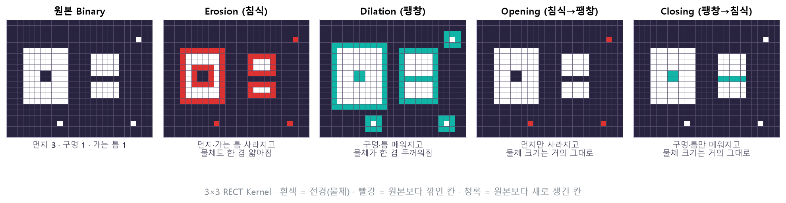
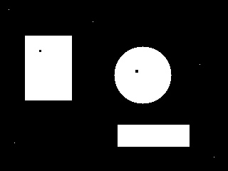
무엇을 보나: 흰 물체 3개(사각형·원·막대) 말고 배경에 흰 먼지 점이, 물체 안에 검은 구멍 점이 있어요. 🤔 왜 이런 그림? 실제 이진화 결과에 흔한 두 가지 흠이에요. 먼지는 Opening, 구멍은 Closing이 담당한다는 걸 옆 세 장에서 비교해요.
무엇을 보나: 배경의 흰 먼지는 사라졌는데, 물체 안 검은 구멍은 그대로예요. 🤔 왜? 침식(깎기)으로 Kernel보다 작은 흰 점이 통째로 없어지고, 팽창으로 큰 물체만 원래 크기로 돌아와요. 검은 구멍은 "흰 것"이 아니라서 이 연산의 대상이 아니에요.
무엇을 보나: 반대로 물체 안 구멍은 메워졌는데, 배경 먼지는 남아 있어요. 🤔 왜? 먼저 부풀리면 흰 영역이 작은 검은 구멍을 덮어 버리고, 다시 깎아도 메워진 구멍은 돌아오지 않아요. 흰 먼지는 부풀었다 다시 깎여 원래대로 남아요.
무엇을 보나: 먼지도 구멍도 없이 물체 3개만 깔끔하게 남았어요. 🤔 왜? 두 연산이 맡는 흠이 달라서 이어서 쓰면 둘 다 정리돼요. 단, Kernel보다 작은 진짜 물체(작은 결함)도 같이 지워질 수 있어요(아래 ⚠️).
kernel = cv2.getStructuringElement(shape=cv2.MORPH_ELLIPSE, ksize=(5, 5))
opened = cv2.morphologyEx(binary, op=cv2.MORPH_OPEN, kernel=kernel, iterations=1)⑤ 영상 — 같은 처리를 Frame마다
영상은 시간 순서로 이어진 Frame(이미지)의 묶음. 그래서 영상 처리 = 이미지 처리 + 시간 순서 + 저장 설정. 한 장 처리 함수를 그대로 재사용해요.
Frame 한 장 읽기→ process_frame()
Gray · Resize · Edge→ write()
출력 영상에 추가↻ 끝나면 release()
| 속성 | 뜻 | 확인 |
|---|---|---|
| Frame | 시간 t의 한 장 | cap.read() |
| FPS | 초당 Frame 수 (재생 속도) | cap.get(cv2.CAP_PROP_FPS) |
| Frame Size | (width, height) | CAP_PROP_FRAME_WIDTH / HEIGHT |
| Frame 수 | 전체 장수 | CAP_PROP_FRAME_COUNT |
| Codec | 압축·저장 방식 | fourcc |
재생시간 = Frame 수 ÷ FPS (일정한 FPS를 가정)
48장 ÷ 12FPS = 4초 30장 ÷ 30FPS = 1초 15장 ÷ 30FPS = 0.5초모든 Frame을 처리할까, 일부만 할까?
step = 5
frame_idx = 0
while True:
ok, frame = cap.read()
if not ok:
break
if frame_idx % step == 0: # 5장마다 1장만 처리
result = process_frame(frame)
frame_idx += 1CAP_PROP_POS_MSEC이나 FPS로 Timestamp를 계산해요.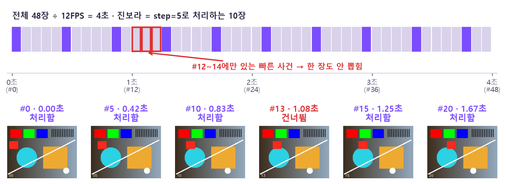
step=5로 처리하는 Frame이고, 아래 썸네일처럼 옆 Frame끼리는 거의 같아요. 빨간 테두리 #12~14에만 있는 빠른 사건은 처리 Frame(#10, #15) 사이에 끼어 한 장도 안 뽑혀요. 🤔 왜? 건너뛰기는 "옆 Frame은 비슷하다"는 가정에 기대요. 그 가정 덕에 처리량이 1/5로 줄지만, step보다 짧게 지나가는 사건에서는 가정이 깨져서 놓쳐요. 그래서 step은 잡아야 할 사건의 길이(초 × FPS)보다 작게 정해요.cap = cv2.VideoCapture("data/sample.avi")
writer = cv2.VideoWriter("outputs/edge.avi", fourcc, fps, size)⑥ 데이터 증강 — 정답은 그대로, 사진만 다양하게
학습 사진을 뒤집고·돌리고·밝게 해서(Flip·Crop·Rotation·Brightness·Blur) 모델이 다양한 조건을 미리 보게 해요. 단, 라벨 뜻이 바뀌면 안 돼요.
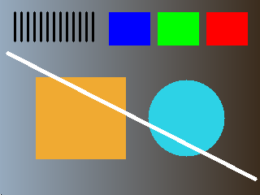
flip(img, 1) 좌우 반전무엇을 보나: 색 칸 순서가 파랑·초록·빨강으로 뒤집히고, 줄무늬가 왼쪽 위로, 밝은 배경이 왼쪽으로 갔어요. 🤔 왜 증강에 써? 고양이는 왼쪽을 봐도 오른쪽을 봐도 고양이라, 라벨은 그대로 두고 사진만 두 배로 늘릴 수 있어요. 글자·좌우가 의미 있는 표지판엔 쓰면 안 돼요.
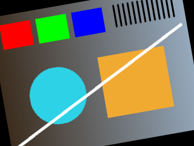
무엇을 보나: 그림 전체가 비스듬해지고, 네 모서리에 검은 삼각형(빈 곳)이 생겼어요. 원래 모서리 일부는 잘려 나갔고요. 🤔 왜 빈 곳이 생겨? 사각형을 돌리면 원래 크기 틀에 다 안 들어가요. 틀 안인데 원본에 해당하는 픽셀이 없는 자리는 채울 값이 없어서 기본값 0(검정)이 돼요. 모델이 이 검은 삼각형을 특징으로 배우지 않도록 각도를 작게 쓰거나 borderMode로 채워요.
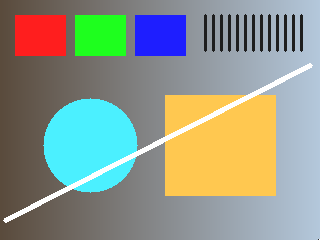
beta=30)무엇을 보나: 전체가 조금 밝아졌고, 특히 왼쪽 어두운 배경이 눈에 띄게 밝아졌어요. 원래 흰 선은 더 밝아질 수 없어 그대로예요. 🤔 왜? 모든 픽셀에 30을 더하지만
uint8은 255가 끝이라 넘는 값은 255에서 멈춰요(convertScaleAbs가 잘라 줘요). 조명이 다른 날 찍힌 사진을 흉내 내는 증강이에요.| 과제 | 써도 되는 변형 | 조심할 변형 |
|---|---|---|
| 일반 사물 분류 | 좌우 반전, 밝기, 작은 Crop | 큰 회전, 과도한 Blur |
| 문자 OCR | 작은 회전, 명암, 노이즈 | 좌우·상하 반전 (b → d) |
| 교통 표지 | 밝기, 날씨 효과 | 좌우 반전이 뜻을 바꿀 수 있음 |
| 의료 영상 | 도메인 기준에 따른 제한적 변형 | 임의 색상·방향 변경 |
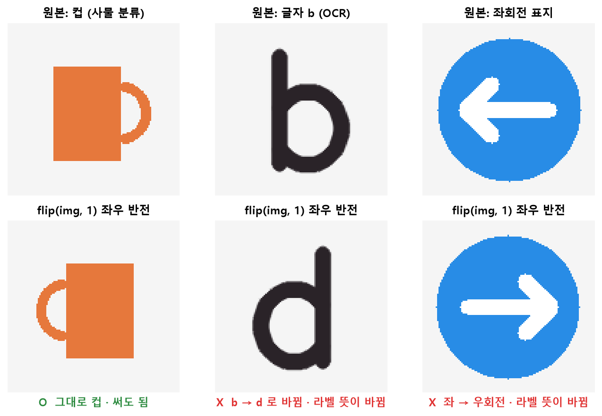
flip(img, 1)을 했어요. 컵은 손잡이 방향만 바뀌어 여전히 컵(O), 글자 b는 d가 되고, 좌회전 화살표는 우회전이 돼요(X). 🤔 왜? 증강은 "같은 정답의 다른 사진"을 만드는 일이라, 변형 후 라벨이 바뀌면 모델에게 틀린 정답을 가르치는 셈이에요. 방향 자체가 뜻인 글자·표지에서는 반전이 바로 그 뜻을 뒤집어요.먼저 분할→ train
기본 전처리 + 무작위 증강/ valid · test
정해진 전처리만 (고정)
cv2.flip() 명령어 사전에서 자세히 →horizontal = cv2.flip(img, flipCode=1) # 좌우
vertical = cv2.flip(img, flipCode=0) # 상하M = cv2.getRotationMatrix2D(center=(w / 2, h / 2), angle=10, scale=1.0) # 2×3 행렬
rotated = cv2.warpAffine(img, M, dsize=(w, h), borderMode=cv2.BORDER_REFLECT)bright = cv2.convertScaleAbs(img, alpha=1.0, beta=30) # 밝기 +30
crop = img[h//10 : h - h//10, w//10 : w - w//10] # NumPy 자르기 [y, x]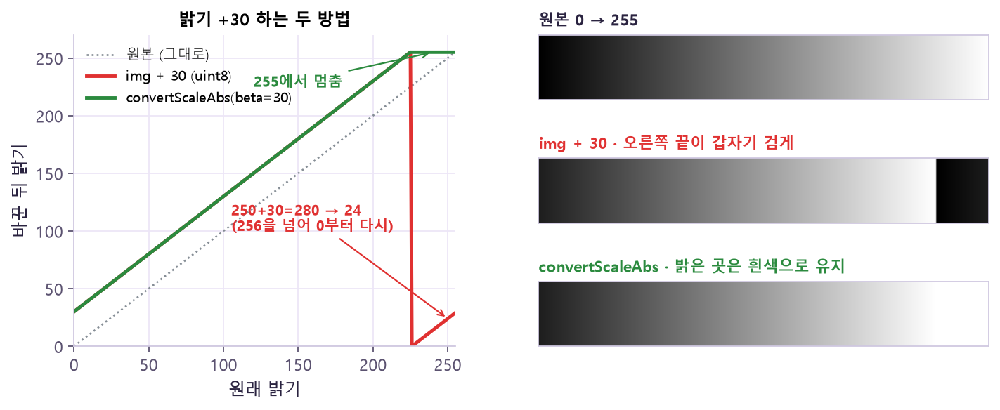
img + 30)은 226에서 갑자기 0으로 떨어지는 톱니, 초록(convertScaleAbs)은 255에서 평평하게 멈춰요. 오른쪽 띠에서 빨강 방법은 가장 밝던 끝이 검게 변했어요. 🤔 왜? uint8은 0~255만 담는 칸이라 256 이상은 256을 뺀 나머지만 남아요(시계가 12 다음에 1로 돌아가듯). convertScaleAbs는 계산 후 범위를 벗어난 값을 0과 255로 잘라 주니 "밝게"라는 의도가 지켜져요.⑦ 일괄 처리 · 검증 — 파일이 열린다고 끝이 아니다
프로젝트에서는 이미지 폴더와 영상을 같은 설정으로 처리하고, 원본 대비 결과를 수치와 그림으로 검증해요. 파일이 열리더라도 작업에 필요한 경계·글자·관심 영역이 남아 있어야 해요.
sorted(Path.glob()) 명령어 사전에서 자세히 →for path in sorted(src_dir.glob("*.png")): # 순서 고정
img = cv2.imread(str(path))검증표와 테스트 상황
| 검증 항목 | 원본 예시 | 결과 예시 | 판정 |
|---|---|---|---|
| 파일 수 | 10 | 10 | 일치 |
| Shape | 다양함 | 240×320 | 설정 일치 |
| dtype | uint8 | uint8 | 유지 |
| 값 범위 | 0~255 이내 | 0~255 이내 | 범위 확인 |
| 읽기 재확인 | 가능 | 가능 | 정상 |
| 영상 (시간) | Frame 수 · FPS · 재생시간 | 입력과 비교 | |
| 상황 | 기대 결과 | 확인 |
|---|---|---|
| 정상 PNG | 읽기·처리·저장 성공 | shape·dtype·재읽기 |
| 다른 크기 이미지 | 설정 크기로 통일 | 원본 비율·왜곡 확인 |
| Gray 입력 | 채널 처리 분기 | BGR 변환 필요 여부 |
| 빈 영상 / 손상 파일 | 명확한 실패 기록 | 출력 생성 금지 |
| FPS 0 또는 미확인 | 대체 규칙 또는 중단 | 보고서 기록 |
| 출력 폴더 없음 | 폴더 생성 후 저장 | 파일 수 확인 |
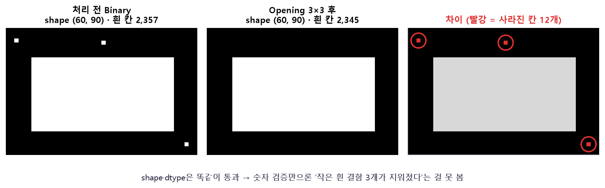
shape (60, 90), uint8로 숫자 검증은 통과해요. 하지만 차이 그림(빨강 = 사라진 칸)을 보면 Opening이 작은 흰 결함 3개(12칸)를 지웠어요. 흰 칸 수도 2,357 → 2,345로 줄었어요. 🤔 왜? shape·dtype은 "그릇 모양"만 확인하고, 안에 무엇이 남았는지는 말해 주지 않아요. 원본과 결과를 빼서(차이) 그려 보거나 흰 칸 수 같은 내용 숫자를 함께 기록해야 정보 손실이 드러나요.- 읽은 직후 None·shape·dtype을 확인했나?
- BGR/RGB와 (H, W)/(W, H)를 혼동하지 않았나?
- 필터·Threshold·Morphology 설정을 코드나 JSON에 남겼나?
- 원본을 보존하고 출력 폴더를 분리했나?
- 영상 Writer의 FPS·Frame Size·채널이 일치하나?
원본 자료
- 강의:
Day13_20261104.pdf(p.2–11 큰 그림, p.18–35 배열·색공간·Resize, p.36–54 Filter·Threshold·형태학, p.55–73 영상·증강, p.74–89 프로젝트·검증) - 요약:
Day13_개념지도.pdf·OpenCV_치트시트.pdf - 공식 문서: OpenCV-Python Tutorials · Smoothing Images · Thresholding · Morphological Transformations